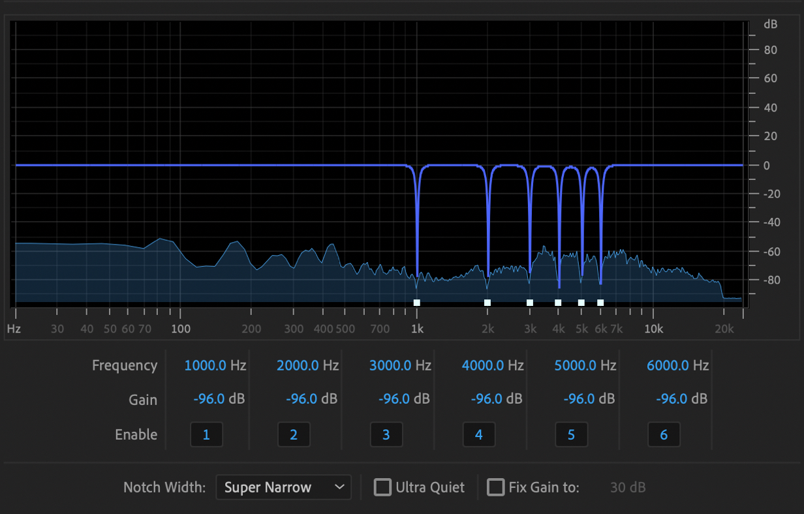

This is for those of you who, after recording several hours of audio gold, listen back to the audio to find a horrific electrical hum.
That very thing happened to a friend of mine recently, and in a last ditch effort, asked if there was anything I could do to save his sonic masterpiece.
Chances are if you used a USB microphone plugged into a computer, the issue is caused by a ground loop issue [1]. You can test if this is true by running your computer on battery if you can. If the hum goes away, then it was a ground loop issue.
But of course knowing that you should have unplugged your laptop while recording doesn't salvage your already recorded work. My friend had tried a couple of fairly solid general approaches for removing noise from audio, a noise gate, and a fancy noise reduction plugin provided by his expensive recording software. Both of these approaches failed. A noise gate mutes any audio below a certain volumne, which is great when the human behind the offending microphone isn't speaking, but is useless when they are. Noise reduction is designed specifically for dynamic, non-verbal audio, and is surpisingly terrible at filtering out a constant, periodic sound.
What ended up doing the trick was a simple notch filter to remove the unwanted frequencies generated by the ground loop hum. As I said, the hum is constant in frequency, and periodic. A notch filter allows for a very narrow frequency band, say within 1Hz to be filtered out. And because you're removing such a narrow part of the spectrum, it has essentially no negative effect on the quality of the audio recording.
In this case, I identified from looking at the audio in the frequecy domain that the hum had a base frequency of exactly 1khz, with some smaller harmonics, at 2kHz-6kHz. Here is what my finished notch filter looked like:
I used Adobe Audition's notch filter, but pretty much any audio editing software will have one. Audacity, a fantastic free DAW even has a guide on their notch filter wiki on how to use a notch to remove mains hum. The notch removed the hum entirely, you'd never know it was ever there. So now you know. Sometimes a simple tool will outperform the state-of-the-art, as long as you know that the tool exists in the first place.
[1] Your power supply is connected to earth, which is the literal earth somewhere, and sometimes the earth connected to the computer and the microphone earth can have different ground potentials, creating an unpleasant hum.